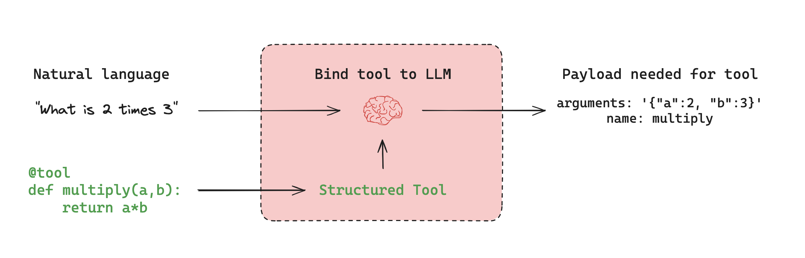

Agent architectures¶
Many LLM applications implement a particular control flow of steps before and / or after LLM calls. As an example, RAG performs retrieval of documents relevant to a user question, and passes those documents to an LLM in order to ground the model's response in the provided document context.
Instead of hard-coding a fixed control flow, we sometimes want LLM systems that can pick their own control flow to solve more complex problems! This is one definition of an agent: an agent is a system that uses an LLM to decide the control flow of an application. There are many ways that an LLM can control application:
- An LLM can route between two potential paths
- An LLM can decide which of many tools to call
- An LLM can decide whether the generated answer is sufficient or more work is needed
As a result, there are many different types of agent architectures, which give an LLM varying levels of control.

Router¶
A router allows an LLM to select a single step from a specified set of options. This is an agent architecture that exhibits a relatively limited level of control because the LLM usually focuses on making a single decision and produces a specific output from limited set of pre-defined options. Routers typically employ a few different concepts to achieve this.
Structured Output¶
Structured outputs with LLMs work by providing a specific format or schema that the LLM should follow in its response. This is similar to tool calling, but more general. While tool calling typically involves selecting and using predefined functions, structured outputs can be used for any type of formatted response. Common methods to achieve structured outputs include:
- Prompt engineering: Instructing the LLM to respond in a specific format via the system prompt.
- Output parsers: Using post-processing to extract structured data from LLM responses.
- Tool calling: Leveraging built-in tool calling capabilities of some LLMs to generate structured outputs.
Structured outputs are crucial for routing as they ensure the LLM's decision can be reliably interpreted and acted upon by the system. Learn more about structured outputs in this how-to guide.
Tool calling agent¶
While a router allows an LLM to make a single decision, more complex agent architectures expand the LLM's control in two key ways:
- Multi-step decision making: The LLM can make a series of decisions, one after another, instead of just one.
- Tool access: The LLM can choose from and use a variety of tools to accomplish tasks.
ReAct is a popular general purpose agent architecture that combines these expansions, integrating three core concepts.
Tool calling: Allowing the LLM to select and use various tools as needed.Memory: Enabling the agent to retain and use information from previous steps.Planning: Empowering the LLM to create and follow multi-step plans to achieve goals.
This architecture allows for more complex and flexible agent behaviors, going beyond simple routing to enable dynamic problem-solving with multiple steps. You can use it with create_react_agent.
Tool calling¶
Tools are useful whenever you want an agent to interact with external systems. External systems (e.g., APIs) often require a particular input schema or payload, rather than natural language. When we bind an API, for example, as a tool, we give the model awareness of the required input schema. The model will choose to call a tool based upon the natural language input from the user and it will return an output that adheres to the tool's required schema.
Many LLM providers support tool calling and tool calling interface in LangChain is simple: you can simply pass any Python function into ChatModel.bind_tools(function).

Memory¶
Memory is crucial for agents, enabling them to retain and utilize information across multiple steps of problem-solving. It operates on different scales:
- Short-term memory: Allows the agent to access information acquired during earlier steps in a sequence.
- Long-term memory: Enables the agent to recall information from previous interactions, such as past messages in a conversation.
LangGraph provides full control over memory implementation:
State: User-defined schema specifying the exact structure of memory to retain.Checkpointers: Mechanism to store state at every step across different interactions.
This flexible approach allows you to tailor the memory system to your specific agent architecture needs. For a practical guide on adding memory to your graph, see this tutorial.
Effective memory management enhances an agent's ability to maintain context, learn from past experiences, and make more informed decisions over time.
Planning¶
In the ReAct architecture, an LLM is called repeatedly in a while-loop. At each step the agent decides which tools to call, and what the inputs to those tools should be. Those tools are then executed, and the outputs are fed back into the LLM as observations. The while-loop terminates when the agent decides it has enough information to solve the user request and it is not worth calling any more tools.
ReAct implementation¶
There are several differences between this paper and the pre-built create_react_agent implementation:
- First, we use tool-calling to have LLMs call tools, whereas the paper used prompting + parsing of raw output. This is because tool calling did not exist when the paper was written, but is generally better and more reliable.
- Second, we use messages to prompt the LLM, whereas the paper used string formatting. This is because at the time of writing, LLMs didn't even expose a message-based interface, whereas now that's the only interface they expose.
- Third, the paper required all inputs to the tools to be a single string. This was largely due to LLMs not being super capable at the time, and only really being able to generate a single input. Our implementation allows for using tools that require multiple inputs.
- Fourth, the paper only looks at calling a single tool at the time, largely due to limitations in LLMs performance at the time. Our implementation allows for calling multiple tools at a time.
- Finally, the paper asked the LLM to explicitly generate a "Thought" step before deciding which tools to call. This is the "Reasoning" part of "ReAct". Our implementation does not do this by default, largely because LLMs have gotten much better and that is not as necessary. Of course, if you wish to prompt it do so, you certainly can.
Custom agent architectures¶
While routers and tool-calling agents (like ReAct) are common, customizing agent architectures often leads to better performance for specific tasks. LangGraph offers several powerful features for building tailored agent systems:
Human-in-the-loop¶
Human involvement can significantly enhance agent reliability, especially for sensitive tasks. This can involve:
- Approving specific actions
- Providing feedback to update the agent's state
- Offering guidance in complex decision-making processes
Human-in-the-loop patterns are crucial when full automation isn't feasible or desirable. Learn more in our human-in-the-loop guide.
Parallelization¶
Parallel processing is vital for efficient multi-agent systems and complex tasks. LangGraph supports parallelization through its Send API, enabling:
- Concurrent processing of multiple states
- Implementation of map-reduce-like operations
- Efficient handling of independent subtasks
For practical implementation, see our map-reduce tutorial.
Subgraphs¶
Subgraphs are essential for managing complex agent architectures, particularly in multi-agent systems. They allow:
- Isolated state management for individual agents
- Hierarchical organization of agent teams
- Controlled communication between agents and the main system
Subgraphs communicate with the parent graph through overlapping keys in the state schema. This enables flexible, modular agent design. For implementation details, refer to our subgraph how-to guide.
Reflection¶
Reflection mechanisms can significantly improve agent reliability by:
- Evaluating task completion and correctness
- Providing feedback for iterative improvement
- Enabling self-correction and learning
While often LLM-based, reflection can also use deterministic methods. For instance, in coding tasks, compilation errors can serve as feedback. This approach is demonstrated in this video using LangGraph for self-corrective code generation.
By leveraging these features, LangGraph enables the creation of sophisticated, task-specific agent architectures that can handle complex workflows, collaborate effectively, and continuously improve their performance.